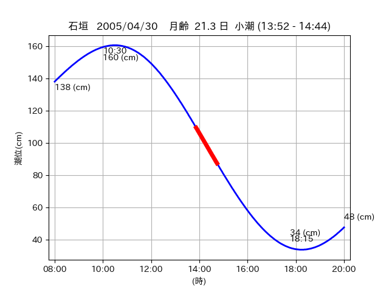
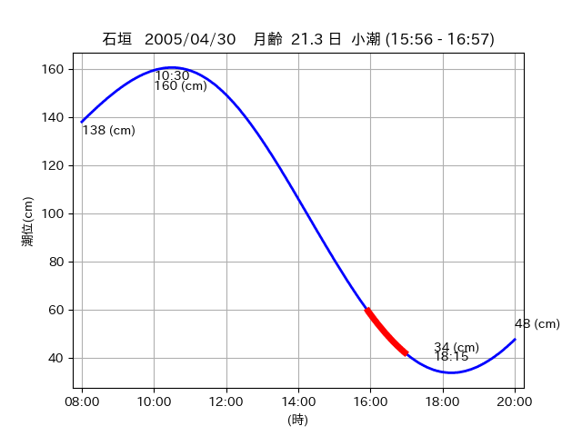

<!DOCTYPE html>
<html>
<head>
    
    <meta http-equiv="content-type" content="text/html; charset=UTF-8" />
    
        <script>
            L_NO_TOUCH = false;
            L_DISABLE_3D = false;
        </script>
    
    <style>html, body {width: 100%;height: 100%;margin: 0;padding: 0;}</style>
    <style>#map {position:absolute;top:0;bottom:0;right:0;left:0;}</style>
    <script src="https://cdn.jsdelivr.net/npm/leaflet@1.9.3/dist/leaflet.js"></script>
    <script src="https://code.jquery.com/jquery-3.7.1.min.js"></script>
    <script src="https://cdn.jsdelivr.net/npm/bootstrap@5.2.2/dist/js/bootstrap.bundle.min.js"></script>
    <script src="https://cdnjs.cloudflare.com/ajax/libs/Leaflet.awesome-markers/2.0.2/leaflet.awesome-markers.js"></script>
    <link rel="stylesheet" href="https://cdn.jsdelivr.net/npm/leaflet@1.9.3/dist/leaflet.css"/>
    <link rel="stylesheet" href="https://cdn.jsdelivr.net/npm/bootstrap@5.2.2/dist/css/bootstrap.min.css"/>
    <link rel="stylesheet" href="https://netdna.bootstrapcdn.com/bootstrap/3.0.0/css/bootstrap-glyphicons.css"/>
    <link rel="stylesheet" href="https://cdn.jsdelivr.net/npm/@fortawesome/fontawesome-free@6.2.0/css/all.min.css"/>
    <link rel="stylesheet" href="https://cdnjs.cloudflare.com/ajax/libs/Leaflet.awesome-markers/2.0.2/leaflet.awesome-markers.css"/>
    <link rel="stylesheet" href="https://cdn.jsdelivr.net/gh/python-visualization/folium/folium/templates/leaflet.awesome.rotate.min.css"/>
    
            <meta name="viewport" content="width=device-width,
                initial-scale=1.0, maximum-scale=1.0, user-scalable=no" />
            <style>
                #map_7e403505fa5912164fb78ba64e8b9ced {
                    position: relative;
                    width: 2048.0px;
                    height: 1600.0px;
                    left: 0.0%;
                    top: 0.0%;
                }
                .leaflet-container { font-size: 1rem; }
            </style>
        
</head>
<body>
    
    
            <div class="folium-map" id="map_7e403505fa5912164fb78ba64e8b9ced" ></div>
        
</body>
<script>
    
    
            var map_7e403505fa5912164fb78ba64e8b9ced = L.map(
                "map_7e403505fa5912164fb78ba64e8b9ced",
                {
                    center: [24.599, 124.355],
                    crs: L.CRS.EPSG3857,
                    ...{
  "zoom": 12,
  "zoomControl": true,
  "preferCanvas": false,
}

                }
            );

            

        
    
            var tile_layer_893177d51588db08becbe004a9a99b8f = L.tileLayer(
                "https://cyberjapandata.gsi.go.jp/xyz/seamlessphoto/{z}/{x}/{y}.jpg",
                {
  "minZoom": 0,
  "maxZoom": 18,
  "maxNativeZoom": 18,
  "noWrap": false,
  "attribution": "\u5730\u7406\u9662\u5730\u56f3",
  "subdomains": "abc",
  "detectRetina": false,
  "tms": false,
  "opacity": 1,
}

            );
        
    
            tile_layer_893177d51588db08becbe004a9a99b8f.addTo(map_7e403505fa5912164fb78ba64e8b9ced);
        
    
            var marker_d0ea380289307343527c989692e25b90 = L.marker(
                [24.5944, 124.2982],
                {
}
            ).addTo(map_7e403505fa5912164fb78ba64e8b9ced);
        
    
            var icon_5b0fed11efec396ab5c77dd5964cff88 = L.AwesomeMarkers.icon(
                {
  "markerColor": "blue",
  "iconColor": "white",
  "icon": "info-sign",
  "prefix": "glyphicon",
  "extraClasses": "fa-rotate-0",
}
            );
        
    
        var popup_d85b0554a9019e9d28e0acf6523fc693 = L.popup({
  "maxWidth": "100%",
});

        
            
                var html_cf69430c2a92659ab675dbd4d7e8c3c9 = $(`<div id="html_cf69430c2a92659ab675dbd4d7e8c3c9" style="width: 100.0%; height: 100.0%;"><table><tr><td></td></tr><tr><td><center>20050430 No.1 </center></table></td></tr></table</div>`)[0];
                popup_d85b0554a9019e9d28e0acf6523fc693.setContent(html_cf69430c2a92659ab675dbd4d7e8c3c9);
            
        

        marker_d0ea380289307343527c989692e25b90.bindPopup(popup_d85b0554a9019e9d28e0acf6523fc693)
        ;

        
    
    
                marker_d0ea380289307343527c989692e25b90.setIcon(icon_5b0fed11efec396ab5c77dd5964cff88);
            
    
            var marker_4ffb1daf8841836cafa0d7023879da60 = L.marker(
                [24.6174, 124.3333],
                {
}
            ).addTo(map_7e403505fa5912164fb78ba64e8b9ced);
        
    
            var icon_b2fc598bda493afee8379bb00bba2855 = L.AwesomeMarkers.icon(
                {
  "markerColor": "blue",
  "iconColor": "white",
  "icon": "info-sign",
  "prefix": "glyphicon",
  "extraClasses": "fa-rotate-0",
}
            );
        
    
        var popup_c10a8e86680bc70e25ad049a85fea190 = L.popup({
  "maxWidth": "100%",
});

        
            
                var html_f4f9b26206562d7fc8dacd1be61ac8cb = $(`<div id="html_f4f9b26206562d7fc8dacd1be61ac8cb" style="width: 100.0%; height: 100.0%;"><table><tr><td></td></tr><tr><td><center>20050430 No.2 </center></table></td></tr></table</div>`)[0];
                popup_c10a8e86680bc70e25ad049a85fea190.setContent(html_f4f9b26206562d7fc8dacd1be61ac8cb);
            
        

        marker_4ffb1daf8841836cafa0d7023879da60.bindPopup(popup_c10a8e86680bc70e25ad049a85fea190)
        ;

        
    
    
                marker_4ffb1daf8841836cafa0d7023879da60.setIcon(icon_b2fc598bda493afee8379bb00bba2855);
            
    
            var marker_0dc7a9b1cd33267884661e7a8b0d5e63 = L.marker(
                [24.5942, 124.3559],
                {
}
            ).addTo(map_7e403505fa5912164fb78ba64e8b9ced);
        
    
            var icon_aea81a3d6125f8a05b3e993e045c3461 = L.AwesomeMarkers.icon(
                {
  "markerColor": "orange",
  "iconColor": "white",
  "icon": "info-sign",
  "prefix": "glyphicon",
  "extraClasses": "fa-rotate-0",
}
            );
        
    
        var popup_d2b9c977fcc63c8ed72db0d1c2262f7a = L.popup({
  "maxWidth": "100%",
});

        
            
                var html_42b1d43557294fe36dddc7544597731b = $(`<div id="html_42b1d43557294fe36dddc7544597731b" style="width: 100.0%; height: 100.0%;"><table><tr><td></td></tr><tr><td><center>20050430 No.3 </center></table></td></tr></table</div>`)[0];
                popup_d2b9c977fcc63c8ed72db0d1c2262f7a.setContent(html_42b1d43557294fe36dddc7544597731b);
            
        

        marker_0dc7a9b1cd33267884661e7a8b0d5e63.bindPopup(popup_d2b9c977fcc63c8ed72db0d1c2262f7a)
        ;

        
    
    
                marker_0dc7a9b1cd33267884661e7a8b0d5e63.setIcon(icon_aea81a3d6125f8a05b3e993e045c3461);
            
    
            var poly_line_b01e9fbfff3163d599989274f0e6ef9d = L.polyline(
                [[24.5942, 124.3559], [24.6037, 124.3543]],
                {"bubblingMouseEvents": true, "color": "#FF00FF", "dashArray": null, "dashOffset": null, "fill": false, "fillColor": "#FF00FF", "fillOpacity": 0.2, "fillRule": "evenodd", "lineCap": "round", "lineJoin": "round", "noClip": false, "opacity": 1.0, "smoothFactor": 1.0, "stroke": true, "weight": 3}
            ).addTo(map_7e403505fa5912164fb78ba64e8b9ced);
        
</script>
</html>